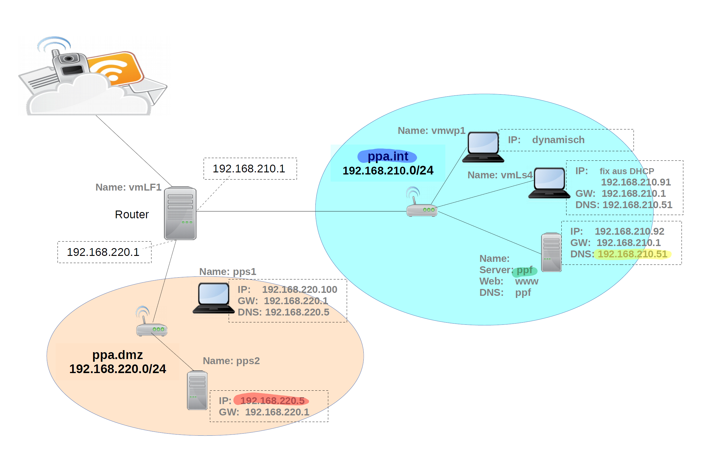

DNS

ls /etc/bind
Überprüfen ob Datei Richtig heisst
less /etc/bind/rndc.key
nano /etc/bind/named.conf.local
include "/etc/bind/rndc.key";
zone "ppa.dmz" {
type master;
file "/etc/bind/db.ppa.dmz";
};
zone "220.168.192.in-addr.arpa" {
type master;
file "/etc/bind/db.192.168.220";
};
zone "ppa.int"{
type master;
file "/var/cache/bind/db.ppa.int";
allow-update {key "rndc-key";};
};
zone "210.168.192.in-addr.arpa" {
type master;
file "/var/cache/bind/db.192.168.210";
allow-update {key "rndc-key";};
};
ls /var/cache/bind/
cp /var/cache/bind/db.hofer.intern /var/cache/bind/db.ppa.int
nano /var/cache/bind/db.ppa.int
; BIND data file for local loopback interface
;
$TTL 604800
@ IN SOA(
ppf.ppa.int. ; MName-Feld primärer Masterser$
root.ppa.int. ; Mailadresse des Admin @=.
2019011101 ; Serial
604800 ; Refresh
86400 ; Retry
2419200 ; Expire
604800 ) ; Negative Cache TTL
;
@ IN NS ppf.ppa.int.
www IN A 192.168.210.51
ppf IN A 192.168.210.51
ifconfig
nano /etc/network/interface
# This file describes the network interfaces available on your system
# and how to activate them. For more information, see interfaces(5).
source /etc/network/interfaces.d/*
# The loopback network interface
auto lo
iface lo inet loopback
# The primary network interface
auto eth0
iface eth0 inet static
address 192.168.210.51
netmask 255.255.255.0
network 192.168.210.0
broadcast 192.168.210.255
gateway 192.168.210.1
# dns-* options are implemented by the resolvconf package, if installed
dns-nameservers 192.168.210.51
dns-search ppa.int ppa.dmz
cp /var/cache/bind/db.ppa.int /var/cache/bind/db.192.168.210
nano /var/cache/bind/db.192.168.210
;
; BIND data file for local loopback interface
;
$TTL 604800
@ IN SOA(
ppf.ppa.int. ; MName-Feld primärer Masterserver
root.ppa.int. ; Mailadresse des Admin @=.
2019011101 ; Serial
604800 ; Refresh
86400 ; Retry
2419200 ; Expire
604800 ) ; Negative Cache TTL
;
@ IN NS ppf.ppa.int.
51 IN PTR www.ppa.int.
51 IN PTR ppf.ppa.int.
cp /var/cache/bind/db.ppa.int /etc/bind/db.ppa.dmz
nano /etc/bind/db.ppa.dmz
;
; BIND data file for local loopback interface
;
$TTL 604800
@ IN SOA(
ppf.ppa.int. ; MName-Feld primärer Masterserver
root.ppa.int. ; Mailadresse des Admin @=.
2019011101 ; Serial
604800 ; Refresh
86400 ; Retry
2419200 ; Expire
604800 ) ; Negative Cache TTL
;
@ IN NS ppf.ppa.int.
pps2 IN A 192.168.220.5
cp /etc/bind/db.ppa.dmz /etc/bind/db.192.168.220
nano /etc/bind/db.192.168.220
;
; BIND data file for local loopback interface
;
$TTL 604800
@ IN SOA(
ppf.ppa.int. ; MName-Feld primärer Masterserver
root.ppa.int. ; Mailadresse des Admin @=.
2019011101 ; Serial
604800 ; Refresh
86400 ; Retry
2419200 ; Expire
604800 ) ; Negative Cache TTL
;
@ IN NS ppf.ppa.int.
5 IN PTR pps2.ppa.dmz.
systemctl restart bind9
journalctl -xe
nano /etc/bind/named.conf.options
options {
directory "/var/cache/bind";
forwarders { 8.8.8.8;
4.4.4.4;};
allow-query {192.168.0.0/16;};
dnssec-validation auto;
auth-nxdomain no; # conform to RFC1035
listen-on-v6 { any; };
};
ifdown && ifup
init 6
DHCP
nano /etc/dhcp/dhcpd.conf
include "/etc/bind/rndc.key";
ddns-update-style interim;
ddns-updates on;
ignore client-updates;
update-static-leases on;
default-lease-time 600;
max-lease-time 7200;
authoritative;
log-facility local7;
option domain-name "ppa.int";
option domain-name-servers 192.168.210.51;
option routers 192.168.210.1;
option broadcast-address 192.168.210.255;
subnet 192.168.210.0 netmask 255.255.255.0 {
range 192.168.210.150 192.168.210.160;
}
host vmLs4 {
hardware ethernet 0:0:c0:5d:bd:95;
fixed-address 192.168.210.91;
}
zone ppa.int {
primary 192.168.210.51;
key "rndc-key";
}
systemctl restart isc-dhcp-server
Apache
cp /etc/apache2/sites-available/www.hofer.intern.conf /etc/apache2/sites-available/www.ppa.int.conf
nano /etc/apache2/sites-available/www.ppa.int.conf
<VirtualHost *:80>
ServerName www.ppa.int
DocumentRoot /var/www.ppa.int
<Directory "/var/www/ppa.int">
Require all granted
</Directory>
</VirtualHost>
mkdir /var/www/ppa.int
nano /var/www/ppa.int/index.html
a2ensite www.ppa.int